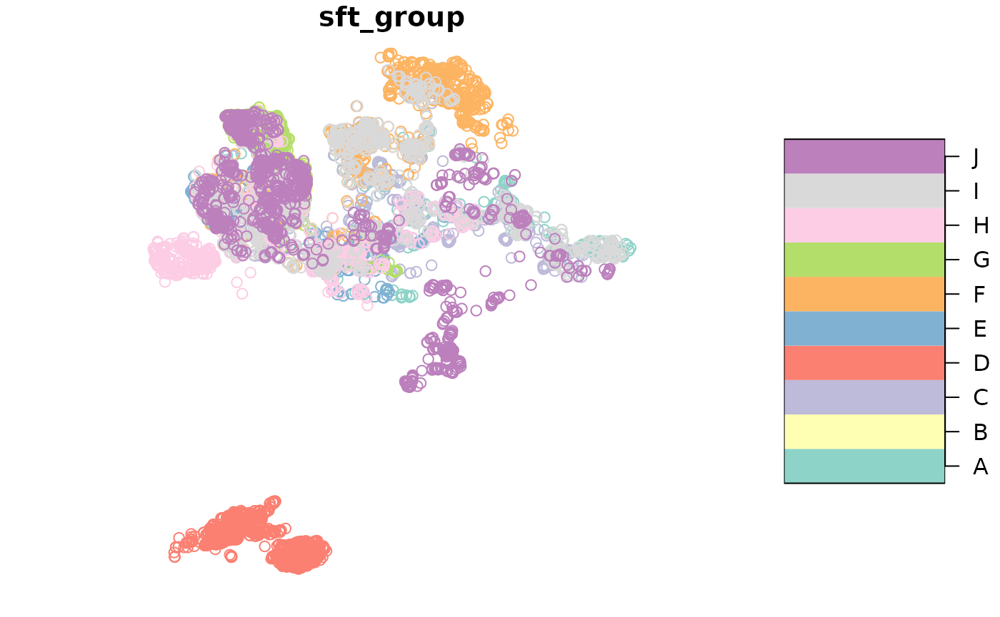
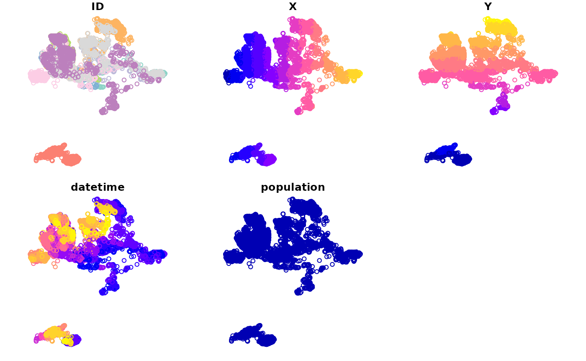

Geometry interface and spatial measures
Alec L. Robitaille, Quinn Webber and Eric Vander Wal
Source:vignettes/geometry-interface-and-spatial-measures.Rmd
geometry-interface-and-spatial-measures.RmdIntroduction
{spatsoc} v 0.2.13 provides a geometry interface and internal functions that provide consistent spatial measures across all {spatsoc} functions.
The motivation for get_geometry is to allow users to
supply a geometry column instead of providing coordinates and optionally
crs through the “coords” and “crs” args. This interface is enabled by
default on all functions that accept coordinates / geometry, by leaving
the coords null and ensuring the geometry column has been set up using
get_geometry().
Details on spatial measures below under Spatial measures.
See the other vignettes for further information:
-
Introduction
to spatsoc
- temporal grouping
- spatiotemporal grouping with
group_pts,group_lines,group_polys - distance based edge-list generation with
edge_dist
-
Frequently
asked questions about spatsoc
- install
- function details for
group_times,group_pts,group_lines,group_polys,edge_dist,edge_nn, andrandomizations - package design including modify-by-reference, data.table column allocation
- calculating summary information
-
Using
spatsoc in social network analysis
- generating gambit-of-the-group data
- generating observed networks
- data stream randomization, randomized networks
- network metrics
-
Using
distance based edge-lists generating functions, dyad_id, and
fusion_id
- generate distance based edge-lists with
edge_distandedge_nn - generate dyad identifiers for edge-lists with
dyad_id - identify fusion events with
fusion_id
- generate distance based edge-lists with
-
Geometry
interface
- using
get_geometryto setup a geometry column and use the geometry interface - details of underlying distance, direction and centroid spatial measures
- converting to and from related packages
- using
-
Interspecific
interactions
- combine two movement datasets
- identify interspecific interactions
Setup
Load packages
library(spatsoc)
library(data.table)
#>
#> Attaching package: 'data.table'
#> The following object is masked from 'package:base':
#>
#> %notin%Example data and variables
# Read example data
DT <- fread(system.file('extdata', 'DT.csv', package = 'spatsoc'))
coords <- c('X', 'Y')
crs <- 32736
datetime <- 'datetime'
id <- 'ID'
get_geometry
get_geometry can be used to setup a DT with
a simple feature geometry list column. Optionally, the input coordinates
can be transformed using the argument “output_crs”. The default output
geometry column name can be changed using the argument
“geometry_colname”.
Usage
# Get geometry
get_geometry(DT, coords = coords, crs = crs)
print(DT)
#> ID X Y datetime population
#> <char> <num> <num> <POSc> <int>
#> 1: A 715851.4 5505340 2016-11-01 00:00:54 1
#> 2: A 715822.8 5505289 2016-11-01 02:01:22 1
#> 3: A 715872.9 5505252 2016-11-01 04:01:24 1
#> 4: A 715820.5 5505231 2016-11-01 06:01:05 1
#> 5: A 715830.6 5505227 2016-11-01 08:01:11 1
#> ---
#> 14293: J 700616.5 5509069 2017-02-28 14:00:54 1
#> 14294: J 700622.6 5509065 2017-02-28 16:00:11 1
#> 14295: J 700657.5 5509277 2017-02-28 18:00:55 1
#> 14296: J 700610.3 5509269 2017-02-28 20:00:48 1
#> 14297: J 700744.0 5508782 2017-02-28 22:00:39 1
#> geometry
#> <sfc_POINT>
#> 1: POINT (715851.4 5505340)
#> 2: POINT (715822.8 5505289)
#> 3: POINT (715872.9 5505252)
#> 4: POINT (715820.5 5505231)
#> 5: POINT (715830.6 5505227)
#> ---
#> 14293: POINT (700616.5 5509069)
#> 14294: POINT (700622.6 5509065)
#> 14295: POINT (700657.5 5509277)
#> 14296: POINT (700610.3 5509269)
#> 14297: POINT (700744 5508782)Spatial measures
Distance
The underlying distance function used depends on the crs of the coordinates or geometry provided.
If the crs is longlat degrees (as determined by
sf::st_is_longlat()), the distance function issf::st_distance()which passes tos2::s2_distance()ifsf::sf_use_s2()is TRUE andlwgeom::st_geod_distance()ifsf::sf_use_s2()is FALSE. The distance returned has units set according to the crs.If the crs is not longlat degrees (eg. NULL,
NA_crs_, or projected), the distance function used isstats::dist(), maintaining expected behaviour from previous versions. The distance returned does not have units set.
Note: in both cases, if the coordinates are NA then the result will be NA.
Direction
The underlying distance function used depends on the crs of the coordinates or geometry provided.
If the crs is provided and longlat degrees (as determined by
sf::st_is_longlat()), the distance function islwgeom::st_geod_azimuth().If the crs is provided and not longlat degrees (eg. a projected UTM), the coordinates or geometry are transformed to
sf::st_crs(4326)before the distance is measured usinglwgeom::st_geod_azimuth().If the crs is NULL or
NA_crs_, the distance function cannot be used and an error is returned.
The crs for direction functions (eg. direction_step,
direction_to_centroid) should be either longlat or a crs
that can be transformed to sf::st_crs(4326). A user can
check their crs by using the function
sf::st_can_transform(src = crs, dst = 4326).
If a user provides a crs that is not longlat and cannot be transformed to 4326, they will receive an internal error with the following structure:
"In CPL_transform(x, crs, aoi, pipeline, reverse, desired_accuracy, : GDAL Error 6: Cannot find coordinate operations from..."
Centroid
The underlying centroid function used depends on the crs of the coordinates or geometry provided.
If the crs is longlat degrees (as determined by
sf::st_is_longlat()) andsf::sf_use_s2()is TRUE, the distance function issf::st_centroid()which passes tos2::s2_centroid().If the crs is longlat degrees but
sf::sf_use_s2()is FALSE, the centroid calculated will be incorrect. Seesf::st_centroid().If the crs is not longlat degrees (eg. NULL, NA_crs_, or projected), the centroid function used is mean.
Note: if the input is length 1, the input is returned directly without any processing.
The distance_to_centroid,
direction_to_centroid and
leader_direction_group expect a centroid column named
‘centroid’ when the geometry interface is used. Ensure the
centroid_group function has been used with the geometry
interface before running these functions.
The following warning may be returned when centroid functions are
used with longlat coordinates / geometry and the {s2} package is not
available or sf::sf_use_s2() is FALSE. Please
set sf::sf_use_s2(TRUE) and try again.
Converting from other packages
Instead of using get_geometry(), coming from other
packages, we can convert the objects to data.tables for processing with
{spatsoc}. Caution: {spatsoc}’s expectation is that the “geometry”
column is sfc_POINT representing each relocation.
Converting from {sftrack}
library(sftrack)
data("raccoon")
raccoon$timestamp <- as.POSIXct(raccoon$timestamp, "EST")
burstz <- list(id = raccoon$animal_id, month = as.POSIXlt(raccoon$timestamp)$mon)
my_track <- as_sftrack(raccoon,
group = burstz, time = "timestamp",
error = NA, coords = c("longitude", "latitude")
)
DT_sftrack <- as.data.table(my_track)
print(DT_sftrack)
#> (id: TTP-058, month: 0)
#> (id: TTP-058, month: 0)
#> (id: TTP-058, month: 0)
#> (id: TTP-058, month: 0)
#> (id: TTP-058, month: 0)
#> (id: TTP-041, month: 1)
#> (id: TTP-041, month: 1)
#> (id: TTP-041, month: 1)
#> (id: TTP-041, month: 1)
#> (id: TTP-041, month: 1)
#> animal_id latitude longitude timestamp height hdop vdop fix
#> <char> <num> <num> <POSc> <int> <num> <num> <fctr>
#> 1: TTP-058 NA NA 2019-01-18 19:02:30 NA 0.0 0.0 NO
#> 2: TTP-058 26.06945 -80.27906 2019-01-18 20:02:30 7 6.2 3.2 2D
#> 3: TTP-058 NA NA 2019-01-18 21:02:30 NA 0.0 0.0 NO
#> 4: TTP-058 NA NA 2019-01-18 22:02:30 NA 0.0 0.0 NO
#> 5: TTP-058 26.06769 -80.27431 2019-01-18 23:02:30 858 5.1 3.2 2D
#> ---
#> 441: TTP-041 26.07068 -80.28009 2019-02-01 14:02:30 17 1.8 2.4 3D
#> 442: TTP-041 26.07069 -80.27996 2019-02-01 15:02:05 -6 2.4 2.2 3D
#> 443: TTP-041 NA NA 2019-02-01 16:02:30 NA 0.0 0.0 NO
#> 444: TTP-041 26.07074 -80.28012 2019-02-01 17:02:09 7 1.6 3.0 3D
#> 445: TTP-041 26.07071 -80.28013 2019-02-01 18:02:07 13 1.6 2.7 3D
#> sft_group geometry
#> <c_grouping> <sfc_POINT>
#> 1: <s_group[2]> POINT EMPTY
#> 2: <s_group[2]> POINT (-80.27906 26.06945)
#> 3: <s_group[2]> POINT EMPTY
#> 4: <s_group[2]> POINT EMPTY
#> 5: <s_group[2]> POINT (-80.27431 26.06769)
#> ---
#> 441: <s_group[2]> POINT (-80.28009 26.07068)
#> 442: <s_group[2]> POINT (-80.27996 26.07069)
#> 443: <s_group[2]> POINT EMPTY
#> 444: <s_group[2]> POINT (-80.28012 26.07074)
#> 445: <s_group[2]> POINT (-80.28013 26.07071)Converting from {move2}
library(move2)
fishers <- mt_read(mt_example(file = "fishers.csv.gz"))
DT_move2 <- as.data.table(fishers)
print(DT_move2)
#> event-id visible timestamp behavioural-classification
#> <i64> <lgcl> <POSc> <fctr>
#> 1: 170635808 TRUE 2011-02-11 17:30:00 <NA>
#> 2: 170635809 TRUE 2011-02-11 17:40:00 <NA>
#> 3: 170635810 TRUE 2011-02-11 17:50:00 <NA>
#> 4: 170635811 TRUE 2011-02-11 18:00:00 <NA>
#> 5: 170635812 TRUE 2011-02-11 18:06:13 <NA>
#> ---
#> 47343: 170705304 TRUE 2011-05-28 09:04:37 <NA>
#> 47344: 170705305 TRUE 2011-05-28 09:06:58 <NA>
#> 47345: 170705306 TRUE 2011-05-28 09:08:59 <NA>
#> 47346: 170705307 TRUE 2011-05-28 09:10:24 <NA>
#> 47347: 170705308 TRUE 2011-05-28 09:12:00 <NA>
#> eobs:battery-voltage eobs:fix-battery-voltage
#> <units> <units>
#> 1: NA [mV] NA [mV]
#> 2: NA [mV] NA [mV]
#> 3: NA [mV] NA [mV]
#> 4: NA [mV] NA [mV]
#> 5: NA [mV] NA [mV]
#> ---
#> 47343: NA [mV] NA [mV]
#> 47344: NA [mV] NA [mV]
#> 47345: NA [mV] NA [mV]
#> 47346: NA [mV] NA [mV]
#> 47347: NA [mV] NA [mV]
#> eobs:horizontal-accuracy-estimate eobs:key-bin-checksum
#> <units> <i64>
#> 1: NA [m] <NA>
#> 2: NA [m] <NA>
#> 3: NA [m] <NA>
#> 4: NA [m] <NA>
#> 5: NA [m] <NA>
#> ---
#> 47343: NA [m] <NA>
#> 47344: NA [m] <NA>
#> 47345: NA [m] <NA>
#> 47346: NA [m] <NA>
#> 47347: NA [m] <NA>
#> eobs:speed-accuracy-estimate eobs:start-timestamp eobs:status
#> <units> <POSc> <ord>
#> 1: NA [m/s] <NA> <NA>
#> 2: NA [m/s] <NA> <NA>
#> 3: NA [m/s] <NA> <NA>
#> 4: NA [m/s] <NA> <NA>
#> 5: NA [m/s] <NA> <NA>
#> ---
#> 47343: NA [m/s] <NA> <NA>
#> 47344: NA [m/s] <NA> <NA>
#> 47345: NA [m/s] <NA> <NA>
#> 47346: NA [m/s] <NA> <NA>
#> 47347: NA [m/s] <NA> <NA>
#> eobs:temperature eobs:type-of-fix eobs:used-time-to-get-fix ground-speed
#> <units> <fctr> <units> <units>
#> 1: NA [°C] <NA> 110 [s] NA [m/s]
#> 2: NA [°C] <NA> 110 [s] NA [m/s]
#> 3: NA [°C] <NA> 110 [s] NA [m/s]
#> 4: NA [°C] <NA> 110 [s] NA [m/s]
#> 5: NA [°C] <NA> 80 [s] NA [m/s]
#> ---
#> 47343: NA [°C] <NA> 37 [s] NA [m/s]
#> 47344: NA [°C] <NA> 58 [s] NA [m/s]
#> 47345: NA [°C] <NA> 59 [s] NA [m/s]
#> 47346: NA [°C] <NA> 24 [s] NA [m/s]
#> 47347: NA [°C] <NA> 110 [s] NA [m/s]
#> heading height-above-ellipsoid manually-marked-outlier sensor-type
#> <units> <units> <lgcl> <fctr>
#> 1: NA [°] NA [m] NA gps
#> 2: NA [°] NA [m] NA gps
#> 3: NA [°] NA [m] NA gps
#> 4: NA [°] NA [m] NA gps
#> 5: NA [°] NA [m] NA gps
#> ---
#> 47343: NA [°] NA [m] NA gps
#> 47344: NA [°] NA [m] NA gps
#> 47345: NA [°] NA [m] NA gps
#> 47346: NA [°] NA [m] NA gps
#> 47347: NA [°] NA [m] NA gps
#> individual-local-identifier geometry
#> <fctr> <sfc_POINT>
#> 1: F1 POINT EMPTY
#> 2: F1 POINT EMPTY
#> 3: F1 POINT EMPTY
#> 4: F1 POINT EMPTY
#> 5: F1 POINT (-73.86015 42.79528)
#> ---
#> 47343: M5 POINT (-73.4067 42.83955)
#> 47344: M5 POINT (-73.40663 42.83997)
#> 47345: M5 POINT (-73.40644 42.84002)
#> 47346: M5 POINT (-73.4063 42.84024)
#> 47347: M5 POINT EMPTYConverting to other packages
After processing with {spatsoc}, optionally convert output to work with other packages. Caution: {spatsoc}’s expectation is that users take their input data.table through any required functions in {spatsoc} before converting to other packages or using eg. {dplyr}. Intermixing packages between {spatsoc} functions can lead to issues with {data.table} class or column allocation. See more details under Package Design in FAQ.
An example of a potential issue with intermixing packages between spatsoc functions is that attributes such as the sf column’s bbox aren’t automatically updated when subsetting with data.table. This impacts the bbox returned, and also the bbox used for plotting. The recommendation is to run all required {spatsoc} functions then convert to standard spatial formats as described below for further processing and visualization.
library(sf)
#> Linking to GEOS 3.12.1, GDAL 3.8.4, PROJ 9.4.0; sf_use_s2() is TRUE
DT[, st_bbox(geometry)]
#> xmin ymin xmax ymax
#> 693394.8 5490131.4 716205.1 5514805.9
DT[1:10, st_bbox(geometry)]
#> xmin ymin xmax ymax
#> 693394.8 5490131.4 716205.1 5514805.9
DT[, plot(geometry)]#> NULL
DT[1:10, plot(geometry)]#> NULL
# Note the bbox can also be manually recomputed
DT[1:10, st_bbox(st_sfc(geometry, recompute_bbox = TRUE))]
#> xmin ymin xmax ymax
#> 714823.4 5505227.2 715872.9 5505837.2
DT[1:10, plot(st_sfc(geometry, recompute_bbox = TRUE))]#> NULLConverting to {sf}
DT_sf <- st_as_sf(DT, sf_column_name = 'geometry')
print(DT_sf)
#> Simple feature collection with 14297 features and 5 fields
#> Geometry type: POINT
#> Dimension: XY
#> Bounding box: xmin: 693394.8 ymin: 5490131 xmax: 716205.1 ymax: 5514806
#> Projected CRS: WGS 84 / UTM zone 36S
#> First 10 features:
#> ID X Y datetime population geometry
#> 1 A 715851.4 5505340 2016-11-01 00:00:54 1 POINT (715851.4 5505340)
#> 2 A 715822.8 5505289 2016-11-01 02:01:22 1 POINT (715822.8 5505289)
#> 3 A 715872.9 5505252 2016-11-01 04:01:24 1 POINT (715872.9 5505252)
#> 4 A 715820.5 5505231 2016-11-01 06:01:05 1 POINT (715820.5 5505231)
#> 5 A 715830.6 5505227 2016-11-01 08:01:11 1 POINT (715830.6 5505227)
#> 6 A 715829.4 5505332 2016-11-01 10:01:18 1 POINT (715829.4 5505332)
#> 7 A 715306.6 5505837 2016-11-01 12:00:49 1 POINT (715306.6 5505837)
#> 8 A 715349.7 5505644 2016-11-01 14:01:23 1 POINT (715349.7 5505644)
#> 9 A 715224.1 5505661 2016-11-01 16:00:51 1 POINT (715224.1 5505661)
#> 10 A 714823.4 5505659 2016-11-01 18:01:16 1 POINT (714823.4 5505659)
plot(DT_sf)
Converting to {sftrack}
library(sftrack)
# First convert to sf as above
DT_sf <- st_as_sf(DT, sf_column_name = 'geometry')
# Then convert to sftrack
DT_sftrack <- as_sftrack(DT_sf, group = c(id = id), time = datetime)
head(DT_sftrack)
#> Sftrack with 6 features and 7 fields (0 empty geometries)
#> Geometry : "geometry" (XY, crs: WGS 84 / UTM zone 36S)
#> Timestamp : "datetime" (POSIXct in UTC)
#> Groupings : "sft_group" (*id*)
#> -------------------------------
#> ID X Y datetime population sft_group
#> 1 A 715851.4 5505340 2016-11-01 00:00:54 1 (id: A)
#> 2 A 715822.8 5505289 2016-11-01 02:01:22 1 (id: A)
#> 3 A 715872.9 5505252 2016-11-01 04:01:24 1 (id: A)
#> 4 A 715820.5 5505231 2016-11-01 06:01:05 1 (id: A)
#> 5 A 715830.6 5505227 2016-11-01 08:01:11 1 (id: A)
#> 6 A 715829.4 5505332 2016-11-01 10:01:18 1 (id: A)
#> geometry
#> 1 POINT (715851.4 5505340)
#> 2 POINT (715822.8 5505289)
#> 3 POINT (715872.9 5505252)
#> 4 POINT (715820.5 5505231)
#> 5 POINT (715830.6 5505227)
#> 6 POINT (715829.4 5505332)
plot(DT_sftrack)
Converting to {move2}
library(move2)
# Convert to a {move2} object using mt_as_move2
DT_move2 <- mt_as_move2(DT,
time_column = datetime,
track_id_column = id,
sf_column_name = 'geometry'
)
print(DT_move2)
#> A <move2> with `track_id_column` "ID" and `time_column` "datetime"
#> Containing 10 tracks lasting on average 120 days in a
#> Simple feature collection with 14297 features and 5 fields
#> Geometry type: POINT
#> Dimension: XY
#> Bounding box: xmin: 693394.8 ymin: 5490131 xmax: 716205.1 ymax: 5514806
#> Projected CRS: WGS 84 / UTM zone 36S
#> First 10 features:
#> ID X Y datetime population geometry
#> 1 A 715851.4 5505340 2016-11-01 00:00:54 1 POINT (715851.4 5505340)
#> 2 A 715822.8 5505289 2016-11-01 02:01:22 1 POINT (715822.8 5505289)
#> 3 A 715872.9 5505252 2016-11-01 04:01:24 1 POINT (715872.9 5505252)
#> 4 A 715820.5 5505231 2016-11-01 06:01:05 1 POINT (715820.5 5505231)
#> 5 A 715830.6 5505227 2016-11-01 08:01:11 1 POINT (715830.6 5505227)
#> 6 A 715829.4 5505332 2016-11-01 10:01:18 1 POINT (715829.4 5505332)
#> 7 A 715306.6 5505837 2016-11-01 12:00:49 1 POINT (715306.6 5505837)
#> 8 A 715349.7 5505644 2016-11-01 14:01:23 1 POINT (715349.7 5505644)
#> 9 A 715224.1 5505661 2016-11-01 16:00:51 1 POINT (715224.1 5505661)
#> 10 A 714823.4 5505659 2016-11-01 18:01:16 1 POINT (714823.4 5505659)
#> Track features:
#> ID
#> 1 A
#> 2 B
#> 3 C
#> 4 D
#> 5 E
#> 6 F
#> 7 G
#> 8 H
#> 9 I
#> 10 J
plot(DT_move2)